Формалізація функціональних вимог у вигляді діаграми варіантів використання
Методичні рекомендації до самостійної роботи студентів
Діаграма варіантів використання (use case diagram) описує функціональне призначення системи або, іншими словами, те, що система робитиме в процесі свого функціонування. Діаграма варіантів використання є початковим концептуальним представленням або концептуальною моделлю системи в процесі її проектування і розробки.
Розробка діаграми варіантів використання переслідує цілі:
- визначити загальні межі і контекст модельованої предметної області на початкових етапах проектування системи;
- сформулювати загальні вимоги до функціональної поведінки проектованої системи;
- розробити початкову концептуальну модель системи для її подальшої деталізації у формі логічних і фізичних моделей;
- підготувати початкову документацію для взаємодії розробників системи з її замовниками і користувачами.
Суть цієї діаграми полягає в наступному: проектована система представляється у вигляді безлічі сутностей або акторів, що взаємодіють з системою з допомогою, так званих варіантів використання. При цьому актором (actor) або дійовою особою називається будь-яка суть, що взаємодіє з системою ззовні. Це може бути людина, технічний пристрій, програма або будь-яка інша система, яка може служити джерелом дії на модельовану систему так, як визначить сам розробник. У свою чергу, варіант використання (use case) служить для опису сервісів, які система надає акторові. Іншими словами, кожен варіант використання визначає деякий набір дій, що здійснюється системою при діалозі з актором. При цьому нічого не говориться про те, яким чином буде реалізовано взаємодію акторів з системою.
Кожен варіант використання відповідає окремому сервісу, який надає модельовану суть або систему за запитом користувача(актора), тобто визначає спосіб застосування цієї суті. Сервіс, який ініціалізувався за запитом користувача, є закінченою послідовністю дій. Це означає, що після того, як система закінчить обробку запиту користувача, вона повинна повернутися в початковий стан, в якому готова до виконання наступних запитів.
Актор є будь-якою зовнішньою по відношенню до модельованої системи суттю, яка взаємодіє з системою і використовує її функціональні можливості для досягнення певної мети або рішення приватних завдань. Кожен актор може розглядатися як деяка окрема роль відносно конкретного варіанту використання. Стандартним графічним позначенням актора на діаграмах є фігурка "чоловічка", під якою записується конкретне ім'я актора (рис. 2.1).
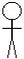
Рисунок 2.1 - Графічне позначення актора
У мові UML є декілька стандартних видів стосунків між акторами і варіантами використання:
- відношення асоціації (association relationship);
- відношення розширення (extend relationship);
− відношення узагальнення (generalization relationship);
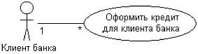
Рисунок 2.2 - Прикладграфічного представленнявідносини асоціаціїміжакторомі варіантом використання
- відношення включення (include relationship).
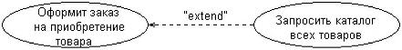
Рисунок 2.3 - Прикладграфічногозображеннявідносинирозширення міжваріантами використання
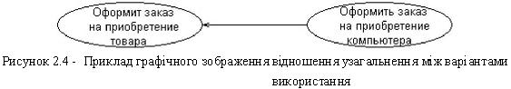
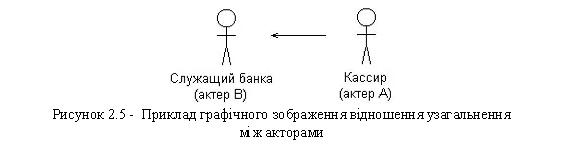
Шаблон опису варіанту використання
Назва___________________ ___________________________________
Назва варіанту використання___________________________________
Вступ_______________________________________________________
Загальний опис призначення цього варіанту використання__________
Передумови_________________________________________________
Умови початку виконання варіанту використання __________________
Основний потік подій__________________________________________
Послідовність подій і дій, що призводять до основної мети
варіанта використання.
Альтернативний потік подій_____________________________________
Послідовності подій і дій, що відхиляються від основного потоку подій (наприклад, виключення, обробка помилок, відмова в доступі
і тому подібне)
Постумови_________________________________________________
Стан системи після виконання варіанту використання. ___________
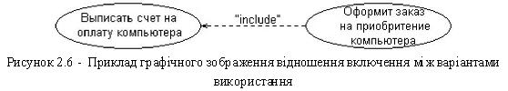
Показана на рис 2.7 Контекстна діаграма (Context diagram) - це частина діаграми сценаріїв використання, що відбиває стосунки цього сценарію використання з дійовими особами і іншими сценаріями використання. Усі сценарії використання включення, що мають відношення, розширення або узагальнення з цим сценарієм використання, також мають бути показані на контекстній діаграмі.
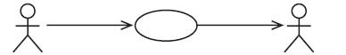
Користувач Бронування рейсу Airline Reservation System
Рисунок 2.7 - Контекстна діаграма (Context diagram) для сценарію використання «Бронювання рейсу»
Для створення документу Специфікації Сценаріїв Використання (Use Case Specification) в RequisitePro, Ви повинні виконати дії, аналогічні діям при створенні документу Вимог Зацікавлених Осіб (Stakeholder Request) і Концепції (Vision):
- у explorer (провіднику), виберіть теку use cases;
- виберіть file> new>document (файл>новий>документ);
- заповніть поля в діалоговому вікні document properties(властивості Документу), як показано на рис 2.8.
Ескіз документу відкриється в Microsoft Word.
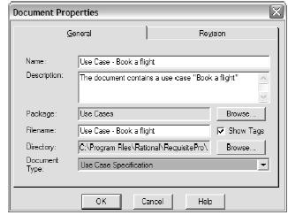
Рисунок 2.8 - Діалогове вікно Document Properties (Властивості Документу) для сценарію використання «Бронювання рейсу»
Заповніть усі пункти документу рис. 2.8.
Для візуального представлення деяких кроків в документ можна включити екранні форми прототипу. Проте, призначення цих екранних форм - не дизайн призначеного для користувача інтерфейсу, а пояснення того, які об'єкти взаємодіють з дійовою особою. Екранна форма також може показувати зразкові значення для введення.
Один з найбільш швидких способів створення таких екранних форм - використання Microsoft Excel для створення таблиць, а потім копіювання і вставка в документ сценаріїв використання, як показано на рис 2.9.
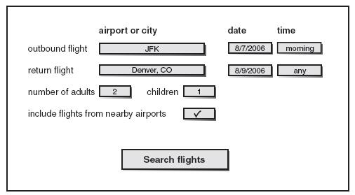
Рисунок 2.9 - Прототип екранної форми
Наочніше і складніші прототипи екранних форм можуть бути створені з використанням Visio, Microsoft PowerPoint, Visual Basic і багатьох інших інструментів.
Для полегшення оновлення Ви можете відокремити прототипи екранних форм від потоку сценаріїв використання. В цьому випадку Вам краще створити окремий пункт в документі(наприклад, Екранна Форма - Prototype Screen) і зробити посилання з кроків сценаріїв використання на відповідний пункт документу.
Створення Вимог. Перед створенням вимог в RequisitePro Ви повинні вирішити, що розумітиметься під однією вимогою:
- цілий сценарій використання;
- кожен альтернативний потік;
- група відповідних кроків;
- кожен крок.
Це рішення залежить від рівня бажаної Вами деталізації в трасуванні (установки зв'язку). Єдиною перевагою збереження цілих сценаріїв використання є обмеження витрат в цілому, але такий підхід може бути не зовсім хорошим для відстежування коректного призначення усіх завдань. Збереження кожного кроку в якості окремої вимоги забезпечить хороше трасування(зв'язок), але це вимагає величезних витрат і може затьмарити основну функціональність і багато деталей. Найбільш кращим підходом є зберігання основного і альтернативних потоків в якості окремих елементарних вимог. Проте, це рішення може мінятися для різних проектів.
Процес створення вимог сценарію використання - той же, який був використаний нами для вимог STRQ і FEAT.
- виділіть назву сценарію використання;
- правою кнопкою мишки натисніть на назві і виберіть new requirement (нова вимога), або виберіть requisitepro>requirement>new (вимога>нове), або натисніть на іконку new requirement (нова вимога);
- з'явиться діалогове вікно requirement properties (властивості вимоги). на закладці general (загальне) вам не треба нічого вводити. тип показується за умовчанням: «uc: use case». вам не треба вводити name (назва), оскільки для визначення вимоги може використовуватися text (текст);
- натисніть оки на діалоговому вікні requirement properties(властивості вимоги).
Замість виділення назви сценарію використання Ви можете включити у вимогу увесь потік. Це дозволить автоматичне відстежування змін, якщо хтось додасть, видалить або змінить будь-який крок. Будь-які зміни будуть відображені в підозрілих зв'язках. Для вимоги Ви можете використати заголовок в якості імені, а потік в якості опису. Якщо Ви використовуватимете заголовок як вимогу, тоді при зміні опису потоку Вам знадобиться вручну означати зв'язки як підозрілі.
Після збереження документу, RequisitePro призначає унікальний номер вимозі. У разі дочірньої вимоги номер складається з номера батьківської вимоги, точки і номера дочірньої вимоги, як показано на рис 2.10. Ієрархія вимог може бути проглянута з Explorer (Провідника), як показано на рис 2.11.
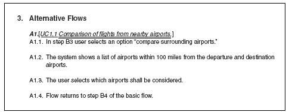
Рисунок 2.10 - Нумерація дочірніх вимог
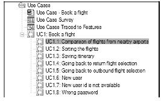
Рисунок 2.11 - Ієрархія сценаріїв використання в Explorer(Провіднику)
Створення Нового Типу Вимог в RequisitePro. Залежно від того, наскільки точно Ви хочете відстежувати трасування (зв'язок) в RequisitePro, Ви можете ввести усі сценарії (алгоритми) в систему, або встановити трасування прямо з сценаріїв використання в тестові сценарії. Перевага введення сценаріїв - це надання детальнішого трасування. Недоліком є те, що це створює зайві витрати. Цей пункт використовує підхід введення усіх сценаріїв.
Сценарій не є стандартним типом вимог в RequisitePro, так що Вам необхідно додати його як новий тип вимог, виконуючи наступні дії:
- у explorer (провіднику), правою кнопкою мишки натисніть на проекті і виберіть properties (властивості);
- виберіть закладку requirements type (тип вимог);
- натисніть add (додати);
- заповніть відповідні поля, як показано на рис 2.12:
1) Name(Назва) : Scenario;
2) Requirement Tag Prefix (Префікс Вимоги) : Може бути будь-яким, але краще якщо з сенсом, наприклад SC;
3) Requirement Color (Колір Вимоги) : Залиште за умовчанням Синій (Blue) або виберіть інший;
4) Requirement Style (Стиль Вимог) : Залиште за умовчанням Подвійне Підкреслення (Double Underline) або виберіть інший.
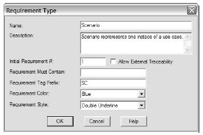
Рисунок 2.12 - Додавання типу вимог Scenario (Сценарій)
Перший крок моделювання сценарію використання - визначення дійових осіб і сценаріїв використання, а також представлення їх на діаграмі сценаріїв використання.
Щоб уникнути багатослівності в моделі сценаріїв використання, Ви можете витягати деякі сценарії використання і встановлювати один з трьох стосунків : включення, розширення і узагальнення. Проте, Вам слід бути обережним, щоб не створити непотрібних стосунків, які тільки ускладнюватимуть модель. Якщо Ви можете виразити функціональність з використанням тільки не надмірних альтернативних сценаріїв, стає непотрібним витягання сценаріїв використання і встановлення стосунків між ними. Особливо Ви повинні уникати довгих ланцюжків стосунків включення і розширення.
Сценарій використання описаний в документі Специфікація Сценаріїв Використання (Use Case Specification). Найбільш важлива частина - цей опис основного потоку і альтернативних потоків як послідовності дій при взаємодії дійової особи з системою.
Процеси створення Специфікації Сценаріїв Використання і вимог для типу сценаріїв використання наслідують ті ж кроки, що і при створенні інших документів і вимог.
Сценарії використання - дуже зручний інструмент для зберігання функціональних вимог. Проте багато вимог не можуть бути з легкістю відображені за допомогою сценаріїв використання. Такі вимоги зберігаються в Додатковій Специфікації.